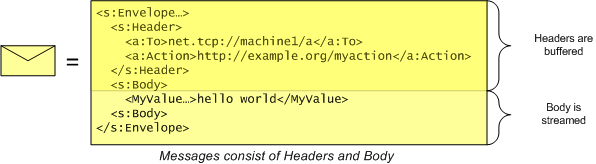

title: Channel Layer Overview description: The Channel Layer provides an abstraction of the transport channel as well as messages sent out on the channel. ms.assetid: d7dddcc6-8eb0-4ee6-8cf5-7701a2be7a19 keywords:
The Channel Layer provides an abstraction of the transport channel as well as messages sent out on the channel. It also includes functions for the serialization of C data types to and from SOAP structures. The Channel Layer enables full control of communications by means of messages consisting of data sent or received and containing bodies and headers, and channels that abstract message exchange protocols and provide properties for customizing settings.
A message is an object that encapsulates network data — specifically, data that is transmitted or received over a network. The message structure is defined by SOAP, with a discrete set of headers and a message body. The headers are placed in a memory buffer, and the message body is read or written using a stream API.

Although the data model of a message is always the XML data model, the actual wire format is flexible. Before a message is transmitted, it is encoded using a particular encoding (such as Text, Binary, or MTOM). See WS_ENCODING for more information on encodings.
A channel is an object used to send and receive messages on a network between two or more endpoints.
Channels have associated data that describes how to address the message when it is sent. Sending a message on a channel is like placing it in a chute — the channel includes the information where the message should go and how to get it there.
Channels are categorized into channel types. A channel type specifies which direction messages can flow. The channel type also identifies whether the channel is sessionful, or sessionless. A session is defined as an abstract way of correlating messages between two or more parties. An example of a sessionful channel is a TCP channel, which uses the TCP connection as the concrete session implementation. An example of a sessionless channel is UDP, which does not have an underlying session mechanism. Although HTTP does have underlying TCP connections, this fact is not directly exposed through this API and therefore HTTP is also considered a sessionless channel.

Although channel types describe the direction and session information for a channel, they do not specify how the channel is implemented. What protocol should the channel use? How hard should the channel try to deliver the message? What kind of security is used? Is it singlecast or multicast? These settings are referred to as the "binding" of the channel. The binding consists of the following:
To start communicating, the client creates a Channel object. But how does the service get its Channel object? It does so by creating a Listener. Creating a listener requires the same binding information that is necessary to create a channel. Once a Listener has been created, the application can Accept Channels from the Listener. Since the application may fall behind in accepting channels, listeners typically keep a queue of channels that are ready to accept (up to some quota).

To initiate communication on the client, use the following sequence.
WsCreateChannel
for each address being sent to
{
WsOpenChannel // open channel to address
// send and/or receive messages
WsCloseChannel // close channel
WsResetChannel? // reset if opening again
}
WsFreeChannel
To accept incoming communications on the server, use the following sequence.
WsCreateListener
WsOpenListener
for each channel being accepted (can be done in parallel)
{
WsCreateChannelForListener
for each accept
{
WsAcceptChannel // accept the channel
// send and/or receive messages
WsCloseChannel // close the channel
WsResetChannel? // reset if accepting again
}
WsFreeChannel
}
WsCloseListener
WsFreeListener
To send messages, use the following sequence.
WsCreateMessageForChannel
for each message being sent
{
WsSendMessage // send message
WsResetMessage? // reset if sending another message
}
WsFreeMessage
The WsSendMessage function does not allow for streaming, and assumes that the body contains only one element. To avoid these constraints, use the following sequence instead of WsSendMessage.
WsInitializeMessage // initialize message to WS_BLANK_MESSAGE
WsSetHeader // serialize action header into header buffer
WsAddressMessage? // optionally address message
for each application defined header
{
WsAddCustomHeader // serialize application-defined headers into header buffer
}
WsWriteMessageStart // write out the headers of the message
for each element of the body
{
WsWriteBody // serialize the element of the body
WsFlushBody? // optionally flush the body
}
WsWriteMessageEnd // write the end of the message
The WsWriteBody function uses serialization to write the body elements. To write the data directly to the XML Writer, use the following sequence instead of WsWriteBody.
WS_MESSAGE_PROPERTY_BODY_WRITER // get the writer used to write the body
WsWriteStartElement
// use the writer functions to write the body
WsWriteEndElement
// optionally flush the body
WsFlushBody?
The WsAddCustomHeader function uses serialization to set the headers to the header buffer of the message. To use the XML Writer to write a header, use the following sequence instead of WsAddCustomHeader.
WS_MESSAGE_PROPERTY_HEADER_BUFFER // get the header buffer
WsCreateWriter // create an xml writer
WsSetOutputToBuffer // specify output of writer should go to buffer
WsMoveWriter* // move to inside envelope header element
WsWriteStartElement // write application header start element
// use the writer functions to write the header
WsWriteEndElement // write application header end element
To receive messages, use the following sequence.
WsCreateMessageForChannel
for each message being received
{
WsReceiveMessage // receive a message
WsGetHeader* // optionally access standard headers such as To or Action
WsResetMessage // reset if reading another message
}
WsFreeMessage
The WsReceiveMessage function does not allow for streaming, and assumes that the body contains only one element, and that the type of the message (action and schema of the body) is known up front. To avoid these constraints, use the following sequence instead of WsReceiveMessage.
WsReadMessageStart // read all headers into header buffer
for each standard header
{
WsGetHeader // deserialize standard header such as To or Action
}
for each application defined header
{
WsGetCustomHeader // deserialize application defined header
}
for each element of the body
{
WsFillBody? // optionally fill the body
WsReadBody // deserialize element of body
}
WsReadMessageEnd // read end of message
The WsReadBody function uses serialization to read the body elements. To read the data directly from the XML Reader, use the following sequence instead of WsReadBody.
WS_MESSAGE_PROPERTY_BODY_READER // get the reader used to read the body
WsFillBody? // optionally fill the body
WsReadToStartElement // read up to the body element
WsReadStartElement // consume the start of the body element
// use the read functions to read the contents of the body element
WsReadEndElement // consume the end of the body element
The WsGetCustomHeader functions use serialization to get the headers from the header buffer of the message. To use the XML Reader to read a header, use the following sequence instead of WsGetCustomHeader.
WS_MESSAGE_PROPERTY_HEADER_BUFFER // get the header buffer
WsCreateReader // create an xml reader
WsSetInputToBuffer // specify input of reader should be buffer
WsMoveReader* // move to inside header element
while looking for header to read
{
WsReadToStartElement // see if the header matches the application header
if header matched
{
WsGetHeaderAttributes? // get the standard header attributes
WsReadStartElement // consume the start of the header element
// use the read functions to read the contents of the header element
WsReadEndElement // consume the end of the header element
}
else
{
WsSkipNode // skip the header element
}
}
Performing a request-reply on the client can be done with the following sequence.
WsCreateMessageForChannel // create request message
WsCreateMessageForChannel // create reply message
for each request reply
{
WsRequestReply // send request, receive reply
WsResetMessage? // reset request message (if repeating)
WsResetMessage? // reset reply message (if repeating)
}
WsFreeMessage // free request message
WsFreeMessage // free reply message
The WsRequestReply function assumes a single element for the body of the request and reply messages, and that the type of the message (action and schema of the body) are known up front. To avoid these limitations, the request and reply message can be sent manually, as shown in the following sequence. This sequence matches the earlier sequence for sending and receiving a message, except where noted.
WsInitializeMessage // initialize message to WS_BLANK_MESSAGE
WsSetHeader // serialize action header into header buffer
WsAddressMessage? // optionally address message
// the following block is specific to sending a request
{
generate a unique MessageID for request
WsSetHeader // set the message ID
}
for each application defined header
{
WsAddCustomHeader // serialize application-defined headers into header buffer
}
WsWriteMessageStart // write out the headers of the message
for each element of the body
{
WsWriteBody // serialize the element of the body
WsFlushBody? // optionally flush the body
}
WsWriteMessageEnd // write the end of the message
WsReadMessageStart // read all headers into header buffer
// the following is specific to receiving a reply
{
WsGetHeader // deserialize RelatesTo ID of reply
verify request MessageID is equal to RelatesTo ID
}
for each standard header
{
WsGetHeader // deserialize standard header such as To or Action
}
for each application defined header
{
WsGetCustomHeader // deserialize application defined header
}
for each element of the body
{
WsFillBody? // optionally fill the body
WsReadBody // deserialize element of body
}
WsReadMessageEnd // read end of message
To receive a request message on the server, use the same sequence as outlined in the previous section on receiving messages.
To send a reply or fault message, use the following sequence.
WsCreateMessageForChannel
for each reply being sent
{
WsSendReplyMessage | WsSendFaultMessageForError // send reply or fault message
WsResetMessage? // reset if sending another message
}
WsFreeMessage
The WsSendReplyMessage function assumes a single element in the body and does not allow for streaming. To avoid these limitations, use the following sequence. This is the same as the earlier sequence for sending a message, but uses WS_REPLY_MESSAGE instead of WS_BLANK_MESSAGE when initializing.
// the following block is specific to sending a reply
{
WsInitializeMessage // initialize message to WS_REPLY_MESSAGE
}
WsSetHeader // serialize action header into header buffer
WsAddressMessage? // optionally address message
for each application defined header
{
WsAddCustomHeader // serialize application-defined headers into header buffer
}
WsWriteMessageStart // write out the headers of the message
for each element of the body
{
WsWriteBody // serialize the element of the body
WsFlushBody? // optionally flush the body
}
WsWriteMessageEnd // write the end of the message
The WS_CHANNEL_TYPE dictates the message exchange pattern possible for a given channel. The type supported, varies according to the binding, as follows:
For each message exchange pattern, there is a specific "loop" that can be used to send or receive messages. The loop describes the legal order of operations necessary to send/receive multiple messages. The loops are describes below as grammar productions. The 'end' term is a receive where WS_S_END is returned (See Windows Web Services Return Values), indicating no more messages are available on the channel. The parallel production specifies that for parallel(x & y) that operation x may be done concurrently with y.
The following loops are used on the client:
client-loop := client-request-loop | client-duplex-session-loop | client-duplex-loop
client-request-loop := open (send (receive | end))* close // WS_CHANNEL_TYPE_REQUEST
client-duplex-session-loop := open parallel(send* & receive*) parallel(send? & end*) close // WS_CHANNEL_TYPE_DUPLEX_SESSION
client-duplex-loop := open parallel(send & receive)* close // WS_CHANNEL_TYPE_DUPLEX
The following loops are used on the server:
server-loop: server-reply-loop | server-duplex-session-loop | server-duplex-loop
server-reply-loop := accept receive end* send? end* close // WS_CHANNEL_TYPE_REPLY
server-duplex-session-loop := accept parallel(send* & receive*) parallel(send* & end*) close // WS_CHANNEL_TYPE_DUPLEX_SESSION
server-input-loop := accept receive end* close // WS_CHANNEL_TYPE_INPUT
Using the WS_SECURITY_CONTEXT_MESSAGE_SECURITY_BINDING on the server requires a successful receive before sending is allowed even with a channel of type WS_CHANNEL_TYPE_DUPLEX_SESSION. After the first receive. the regular loop applies.
Note that channels of type WS_CHANNEL_TYPE_REQUEST and WS_CHANNEL_TYPE_REPLY can be used to send and receive one-way messages (as well as the standard request-reply pattern). This is accomplished by closing the reply channel without sending a reply. In this case, there will be no reply received on the request channel. The return value WS_S_END Using the WS_SECURITY_CONTEXT_MESSAGE_SECURITY_BINDING on the server requires a successful receive before sending is allowed even with a channel of type WS_CHANNEL_TYPE_DUPLEX_SESSION. After the first receive the regular loop applies.
will be returned, indicating no message available.
Client or server loops may be done in parallel with each other by using multiple channel instances.
parallel-client: parallel(client-loop(channel1) & client-loop(channel2) & ...)
parallel-server: parallel(server-loop(channel1) & server-loop(channel2) & ...)
A server channel may filter received messages that are not intended for the application, such as messages that establish a security context. In that case WS_S_END will be returned from WsReadMessageStart and no application messages will be available on that channel. However, this does not signal that the client intended to end communication with the server. More messages may be available on another channel. See WsShutdownSessionChannel.
The WsAbortChannel function is used to cancel pending IO for a channel. This API will not wait for the IO operation(s) to complete. See the WS_CHANNEL_STATE state diagram and documentation for WsAbortChannel for more information.
The WsAbortListener API is used to cancel pending IO for a listener. This API will not wait for the IO operation(s) to complete. Aborting a listener will cause any pending accepts to be aborted as well. See the WS_LISTENER_STATE state diagram and WsAbortListener for more information.
The WS_TCP_CHANNEL_BINDING supports SOAP over TCP. The SOAP over TCP specification builds upon the .NET Framing mechanism.
Port sharing is not supported in this version. Each listener that is opened must use a different port number.
The WS_UDP_CHANNEL_BINDING supports SOAP over UDP.
There are a number of limitations with the UDP binding:
The WS_HTTP_CHANNEL_BINDING supports SOAP over HTTP.
To control HTTP specific headers on the client and server, see WS_HTTP_MESSAGE_MAPPING.
To send and receive non-SOAP messages on the server, use WS_ENCODING_RAW for WS_CHANNEL_PROPERTY_ENCODING.
The WS_NAMEDPIPE_CHANNEL_BINDING supports SOAP over named pipes, allowing communication with the Windows Communication Foundation (WCF) service using NetNamedPipeBinding.
Request/Reply messages are correlated in one of two ways:
The following channel layer APIs automatically use the appropriate correlation mechanisms based on the WS_ADDRESSING_VERSION of the channel.
If these APIs are not used, the headers can be manually added and accessed using WsSetHeader or WsGetHeader.
If the predefined set of channel bindings do not meet the needs of the application, then a custom channel and listener implementation can be defined by specifying WS_CUSTOM_CHANNEL_BINDING when creating the channel or listener. The actual implementation of the channel/listener is specified as a set of callbacks via WS_CHANNEL_PROPERTY_CUSTOM_CHANNEL_CALLBACKS or WS_LISTENER_PROPERTY_CUSTOM_LISTENER_CALLBACKS properties. Once a custom channel or listener are created, the result is a WS_CHANNEL or WS_LISTENER object that can be used with existing APIs.
A custom channel and listener can also be used with Service Proxy and Service Host by specifying the WS_CUSTOM_CHANNEL_BINDING value in the WS_CHANNEL_BINDING enumeration and the WS_CHANNEL_PROPERTY_CUSTOM_CHANNEL_CALLBACKS and WS_LISTENER_PROPERTY_CUSTOM_LISTENER_CALLBACKS properties when creating the Service Proxy or Service Host.
The channel allows limiting the amount of memory used for various aspects of operations through properties such as:
These properties have default values which are conservative and secure for most scenarios. Default values and any modifications to them should be carefully evaluated against potential attack vectors which may cause denial of service by a remote user.
The channel allows setting timeout values for various aspects of operations through properties such as:
These properties have default values which are conservative and secure for most scenarios. Increasing timeout values increases the amount of time that a remote party can hold a local resource alive, such as memory, sockets, and threads doing synchronous I/O. An application should evaluate the default values and use caution when increasing a timeout as it may open up potential attack vectors which may cause denial of service from a remote computer.
Some of the other configuration options and application design considerations that should be carefully evaluated when using WWSAPI Channel API:
Similarly, there are message configuration options and application design considerations that should be carefully evaluated when using WWSAPI Message API:
Â
Â